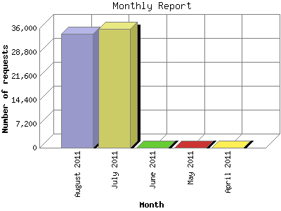

The Monthly Report identifies activity for each month in the report
time frame. Remember that each page hit can result in several server requests
as the images for each page are loaded.
Note: Depending on the
report time frame, the first and last months may not represent a complete
month's worth of data, resulting in lower hits.

| Month | Number of requests | Number of page requests | |
|---|---|---|---|
| 1. | April 2011 | 12 | 12 |
| 2. | May 2011 | 88 | 88 |
| 3. | June 2011 | 60 | 60 |
| 4. | July 2011 | 35,834 | 1,349 |
| 5. | August 2011 | 34,293 | 1,521 |
Most active month August 2011 : 1,521 pages sent. 35,834 requests handled.
Monthly average: 606 pages sent. 14,057 requests handled.
This report was generated on August 17, 2011 03:49.
Report time frame April 27, 2011 21:08 to August 16, 2011 23:44.
| Web statistics report produced by: analog 5.1 / Report Magic 2.21 |